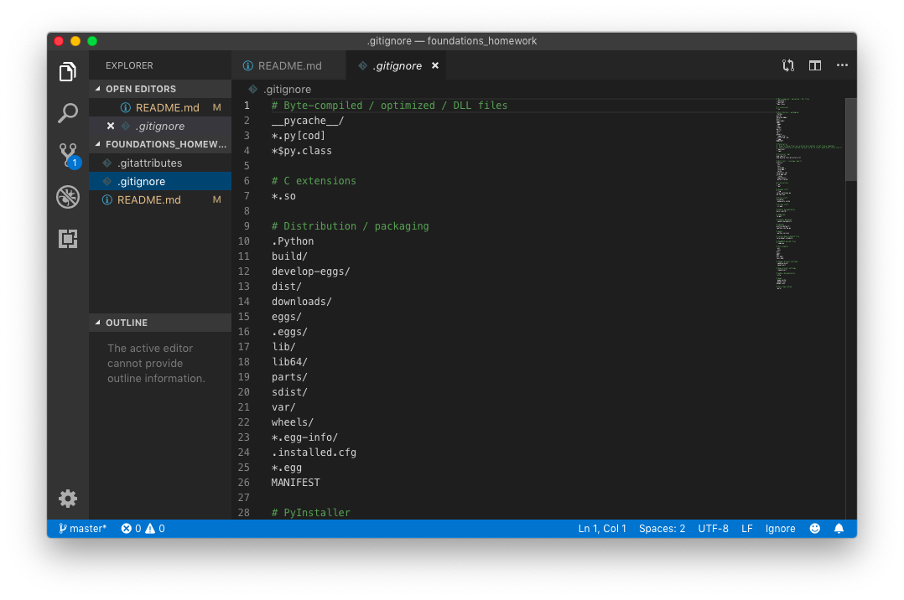

Creating and updating your GitHub repository
Let’s walk through the steps necessary to create a new GitHub repository. A “repository” is just a fancy word for “a project.” The pieces of the project will all be saved together at their own URL on GitHub.
Remember, the git software is different than GitHub! git allows you to save checkpoints of your work, while GitHub is a place on the web where you can send your code for safekeeping and sharing.
Download GitHub Desktop
First, download GitHub Desktop from https://desktop.github.com/.
Creating our repository
When you first open GitHub Desktop, you’ll have a few options. We want to create a new repo on our own computer.
A new window will open where you can fill in some details.
- Name will be the name of the folder that’s created
- Local Path will be the directory where the folder is created
- Initialize with a README will put a blank
README.mdin your repo. You don’t have to do this, but it’s useful to remember that you should have a README! - Git ignore will provide a list of files to ignore. Python is a great choice. You can also use gitignore.io to create one later
To finish, click Create Repository
Files it made
A few files were created in your new project! One is README.md, which doesn’t have much in it (yet!). This will show up whenever someone visits your page on GitHub.
The other is .gitignore, which is a list of files git will ignore. This is useful for secret, large, or temporary files.

Sending our repo to GitHub
At the beginning, everything we’ve made is on our computer and not on the GitHub website. To fix this, we’ll need to publish our repository. After you’ve clicked this, when you visit github.com you’ll find it listed on your repository page.
It’s so important it gets two buttons! Once you click it you’ll be asked for some details. You can provide a little description and uncheck the Keep this code private checkbox - this will let people see your code (like teaching assistants or potential employers).
Once this is done, you can click the “View on GitHub” link to open up your repo on GitHub.
Making edits and sending data to our repository
A quick way to start editing your code is by clicking the very obvious Open in Visual Studio Code button. This will open your repo up in Visual Studio Code.
If you open up README.md, you’ll see it’s pretty much blank. Let’s edit it and add some content!
If you go back to GitHub Desktop, it will show you that README.md has changes (left hand panel) and what the changes are (right hand panel). Additions are green and have a +, while removals are red with a -.
To save your changes as a checkpoint, check Commit to master on the bottom left. This is called a… commit!
If you have multiple files, you’ll need to write some details about your changes before it will let you commit.
Now that we’ve saved a checkpoint, it’s only saved on our machine, so we need to send our data up to GitHub (“push”). It’s so important there are two buttons for it! Click one to send your data up to GitHub.
Seeing our changes on GitHub
If you visit your repository on GitHub, you’ll see all your code as well as your README.md displayed in nice nice Markdown.